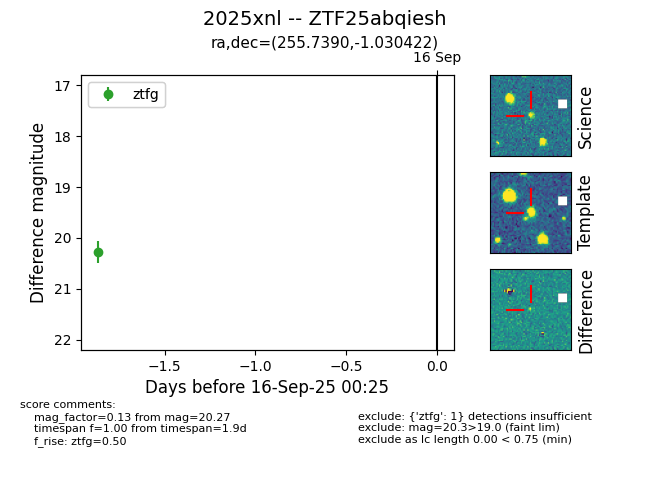

FINK: ZTF25abqiesh
Lasair: ZTF25abqiesh
ALeRCE: ZTF25abqiesh
TNS: 2025xnl
YSE: 2025xnl
ZTF25abqiesh (ztf,fink)
2025xnl (tns,yse)
equatorial (ra, dec) = (255.7390,-1.03042)
galactic (l, b) = (18.8132,+23.41868)

last ztfg=20.27, ztfr=19.65
1 ztfg, 1 ztfr detections